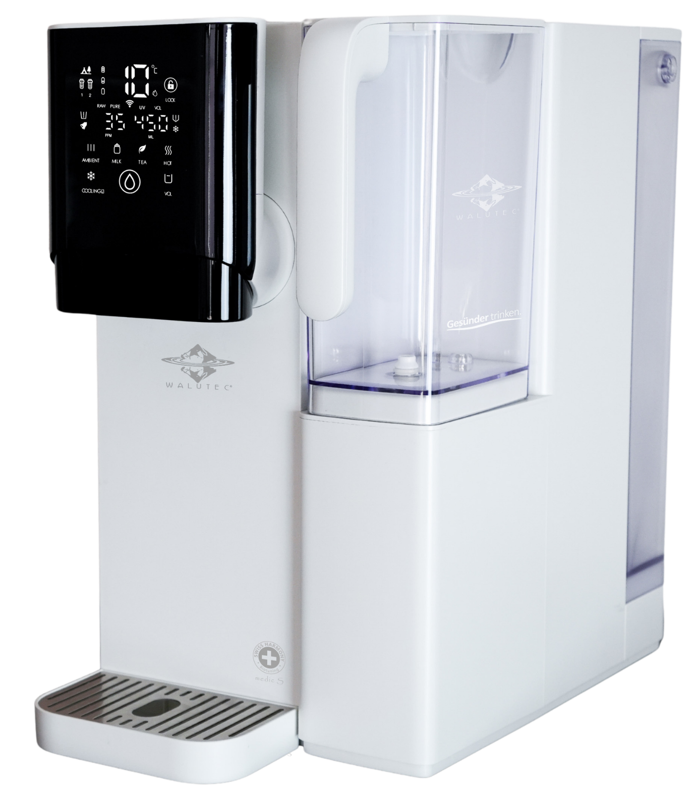
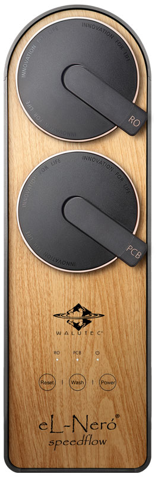

WasserfiltrationOffizielle Website ↗
WALUTEC
Wassertechnologie-Marke mit Filtration, Umkehrosmose und Wasserstoffwasser-Produkten.
LandGermany
GegründetNicht öffentlich angegeben
Produkte in der Datenbank3
Über die Marke
Wassertechnologie-Marke mit Filtration, Umkehrosmose und Wasserstoffwasser-Produkten.
Schwerpunkt
Wasserfiltration
Produkte von WALUTEC
Aktuelle Modelle mit offiziellen Produktdaten.


WALUTEC
eL-Neró® smart + medic S
Preis auf Anfrage
Bauart: Mobiles Auftischsystem ohne FestwasseranschlussTechnologie: 4 Phasen mit 13 Filtrations- und AufbereitungsstufenRO-Membran: FILMTEC® TFC, 100 GPD, 0,0001 µm

WALUTEC
eL-Neró® speedflow medic S
Preis auf Anfrage
Bauart: Tankloses Untertisch-Direct-Flow-SystemTechnologie: 4 Phasen, bis zu 14 Filtrations- und AufbereitungsstufenRO-Membran: 700 GPD Hochleistungsmembran